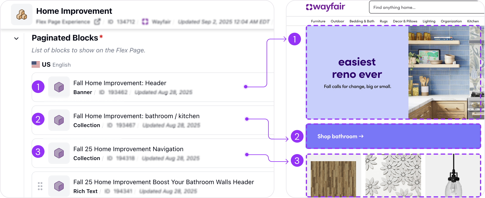

Wayfair Internal Template System
A reusable template system for Block Builder, Wayfair's internal CMS — cutting page-creation time by ~83% and helping teams scale high-traffic launches.
Problem
To build one campaign page, content managers assembled 8–22 nested blocks from ~994 block types — with no way to preview before publishing. Slow, complex, and error-prone.
My role
- Product Designer II — led the template system end to end
- Audited flows and aligned stakeholders early
- Designed the create → preview → replace experience
Solution
A reusable template system inside Block Builder — pick a template, preview exactly what it creates, and replace placeholder content, instead of building every page from scratch.
Team
- Content Platform, Wayfair
- With PM, EM, and engineers
- April – August 2025
Impact
Faster launches,more capacity
Time saved
Building a page dropped from ~60 minutes to ~10 minutes.
Pages / quarter
of new capacity, reinvested into pages that drive traffic & revenue.
Adoption
within the first month of launch.
Overview
Block Builder powersthousands of Wayfair pages
Block Builder is Wayfair's internal CMS — the backbone of the site. Every page on Wayfair.com, from homepages to category and checkout pages, is created and scheduled through it by assembling reusable "blocks."
The problem
Building one page was slow, complex, and unpredictable
Every page means assembling blocks by hand — and content managers repeat the same loop again and again: find the right block type, configure its nested layers, and do it 8–22 times per page. Then they can't see the result until it's published.

Every block has a block type (banner, collection, etc.); 1 block = 1 component on a page.
Overwhelming block types
Find the right type among ~994 options, often with no guidance on which to pick.
Time-consuming
8–22 nested blocks per page — roughly an hour to build a single campaign page.
Flying blind
No way to preview until publish, causing constant back-and-forth revisions.
Design goal
Design a template system that helps content managers save a ton of time.
Design process
Scoping the designfor stakeholder alignment
Block Builder is a complex tool, so I started from patterns content managers already knew — auditing familiar platforms to lower the learning curve. Then I mapped every key user flow to cover the edge cases, and built mockups to align stakeholders early and speed up decisions.
The solution
A template flow that solvesall three pain points
The system meets content managers where they already create blocks, then guides them from choosing a template to previewing it to filling in real content.
1 · Switch between block type and template
I added a tab in the create-block flow so users can choose a template instead of a raw block type — right where they already work, making the feature discoverable without disrupting existing behavior. Templates also show a visual preview at the first layer, so it's easy to tell what a block will look like.
2 · Preview the details before committing
A template details page clarifies exactly what's being added — the relationships between the nested blocks it will create, side by side with a preview of how it will look — so there are no surprises later when multiple blocks appear.
3 · Create the whole structure in one click
"Use template" generates the full nested block structure instantly — collapsing what used to be many manual steps into one.
4 · Nudge users to finish the content
Because templates ship with placeholder data, I added a subtle orange "Replace content" badge — a gentle warning that keeps unfinished placeholders from going live.
Taking initiative
Spotting a deeper problemand getting it on the roadmap
While designing templates, I kept hitting a bigger issue: navigating Block Builder's nested blocks, where drawers can go 8 levels deep. On my own initiative, I audited how other complex tools handle deep hierarchy and designed a "Mini-Tree" sidebar so users can always see where they are and jump between layers.
To win buy-in on a tight deadline, I framed it not as a new feature but as a lighter visual treatment of our existing "Tree" — which made it easy for engineering to T-shirt size and for PMs to add it to the roadmap. A quick prototype sealed the alignment.
Reflection
What I learned
Meeting users inside the flow they already know mattered more than adding a shiny new surface — the template tab worked because it didn't ask people to change their habits.
What I'd do differently
I'd involve more launch teams during early design to capture edge cases before rollout.